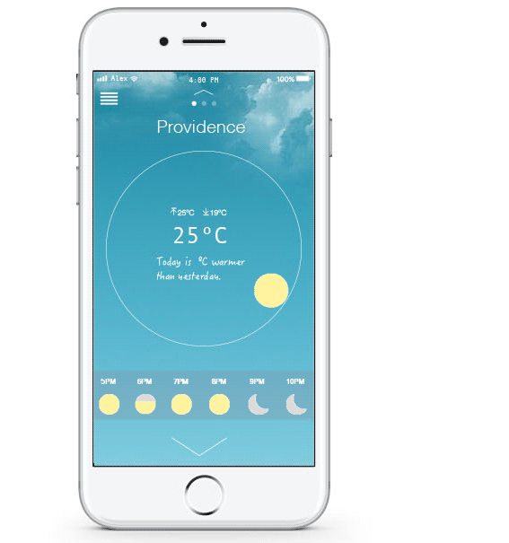
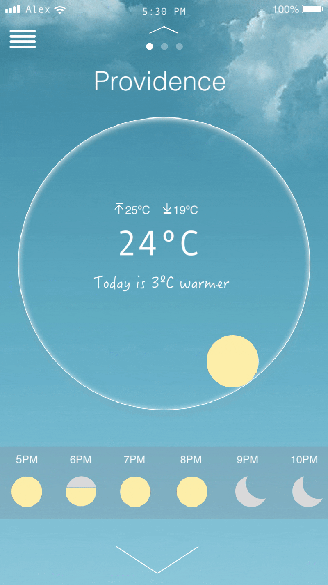
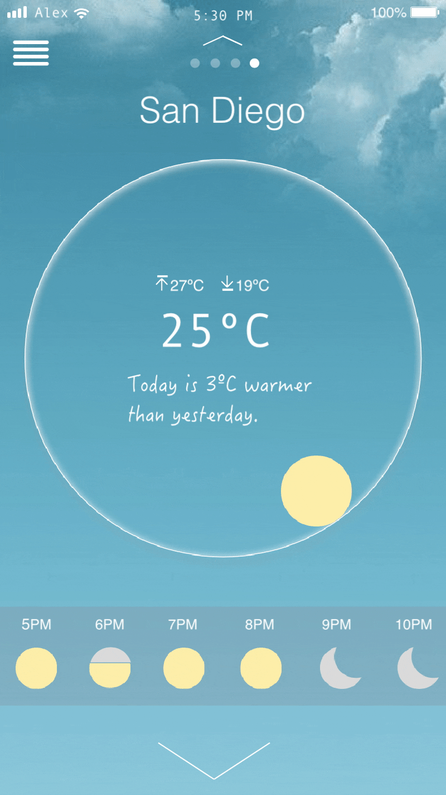
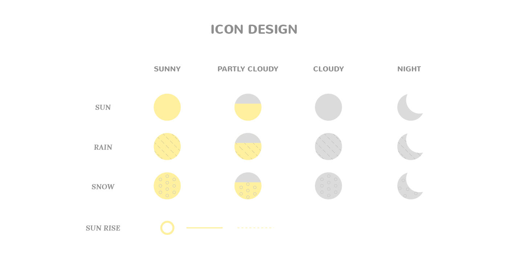

We check the weather by numeric data.
But it is quiet hard to figure out the sense of 21’c.
You have sense of yesterday weather because you already felt it.
My idea start from here.
By comparing the yesterday weather,
user can expect sense of today’s weather.
This app shows the weather difference between yesterday and today.
The data can be translated by your own experience.
With this app, user can translate their own weather information with their own feelings.
Personal project - UX/UI design, concept design, interaction design, icon design
Tools - sketch, after effects, flinto, photoshop, illustrator
One day I visited my friend’s city and I asked about the weather there. My city was 20’C and my friend’s city was around 28’C. Since it was autumn and I forget how warm or hot is the 28’C is. She said is warm. But for me, it was very very hot. For this experience, I found out the interesting idea about the weather.
During the change of the season, temperature change dramatically. Sometimes, I can’t imagine how cold and how hot the weather is. When people talk about temperature, we use the number. But people feel differently with the numeric definition. Some people think 25’C is chill and some people think 25’C is warm. We all have a different degree of feeling. It would be great if people can have a personal standard to define the temperature.
Creating personal weather definition
We already have great data which is not objective but always right.
Experience = Personal Data
Users can compare the temperature they have already experienced before.
This is not always right for everyone but it is right for the user who uses this application.
1.Users can check today's weather information with comparison of yesterday's temperature.
2. Depending on time, the weather icon changes the position. I divided a circle into 12 sections and locate the weather icon. This UI shows time information visually.
3. Users can search the city they want to know
4.Users can add and delete cities on their list.
